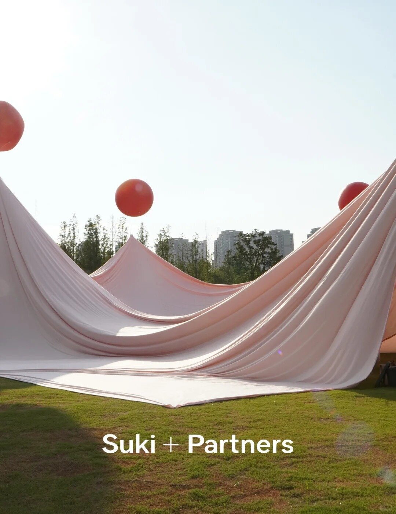
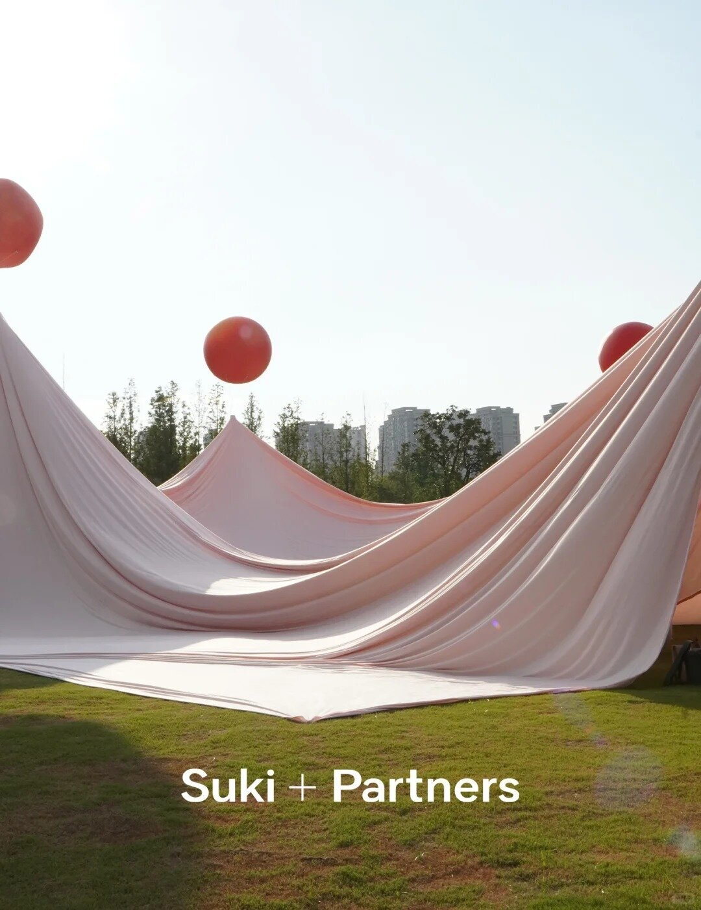
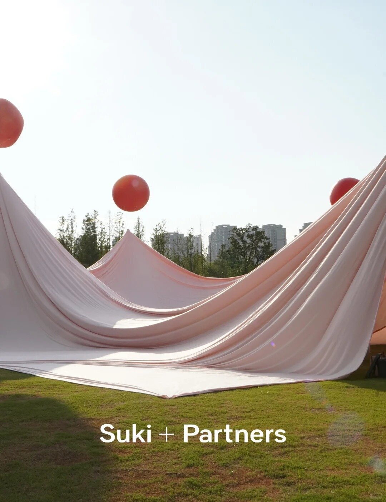

记忆与游乐场
是什么构成“游乐场”，是被夕阳映成橘色的衣裳，炎热夏天的凉爽的气泡水，在布帘掀起的阴凉空间下远嘹看到的白色大桥，风在布里钻来钻去，一边想抓住这股风，一边期待被它托起，小孩在奔跑打滚……“游乐场”像一块海绵，吸汲着我们不断涌流的记忆的潮水并随之膨胀。

 


是什么构成“游乐场”，是被夕阳映成橘色的衣裳，炎热夏天的凉爽的气泡水，在布帘掀起的阴凉空间下远嘹看到的白色大桥，风在布里钻来钻去，一边想抓住这股风，一边期待被它托起，小孩在奔跑打滚……“游乐场”像一块海绵，吸汲着我们不断涌流的记忆的潮水并随之膨胀。
